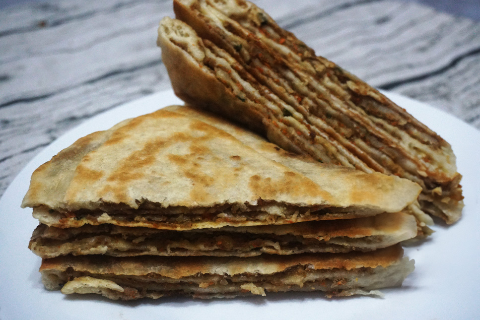
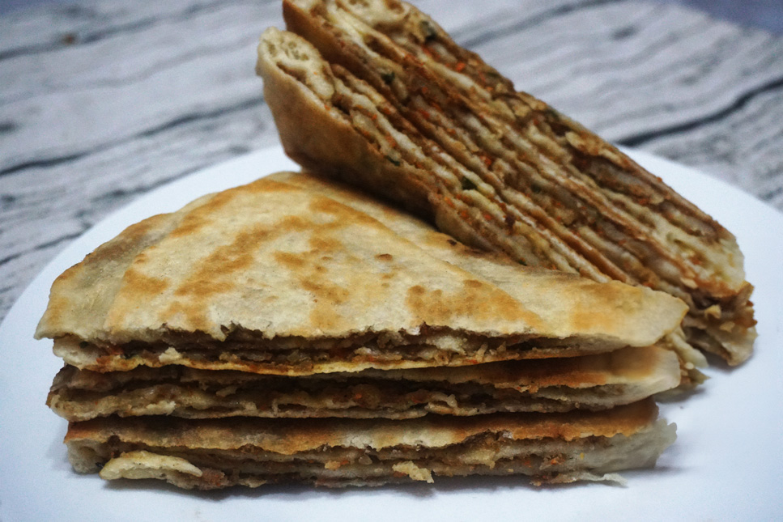

CHAN
Located in the heart of Barranco district in Lima-Peru, CHAN is a cozy spot offering genuine Chinese flavors in a small, welcoming setting. Despite our size, we're big on authenticity, bringing real traditional Chinese food to the table with care and passion.
Our intimate space in this culturally rich neighborhood is a haven for those who appreciate a homely atmosphere and a taste of true Chinese cuisine. With locally sourced ingredients and seasonings from China, we ensure each dish tells a genuine story of flavor.
CHAN stands out for its simplicity, heartfelt hospitality, and a commitment to authentic tastes. Join us in Barranco for a delightful experience where the joy of food takes center stage, proving that great things come in small packages. Just remember, CHAN is NOT a Chifa!.